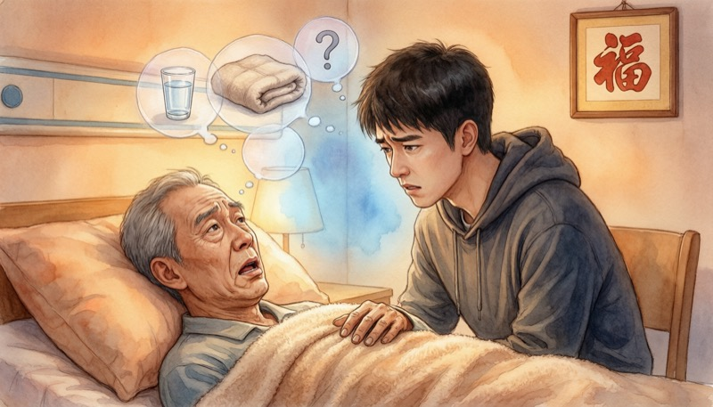
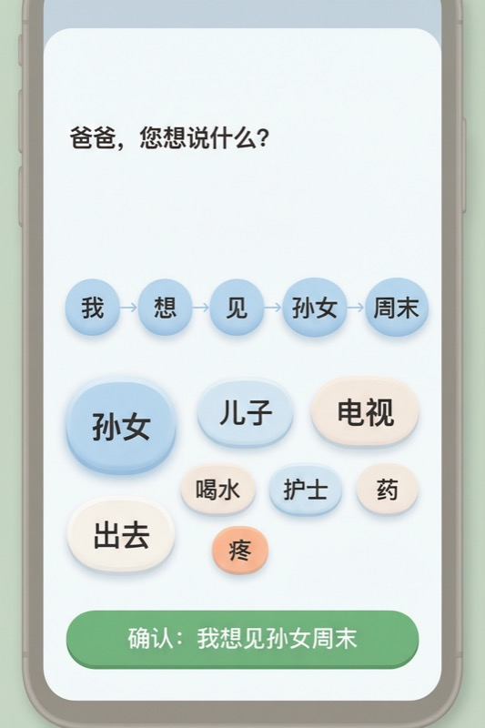
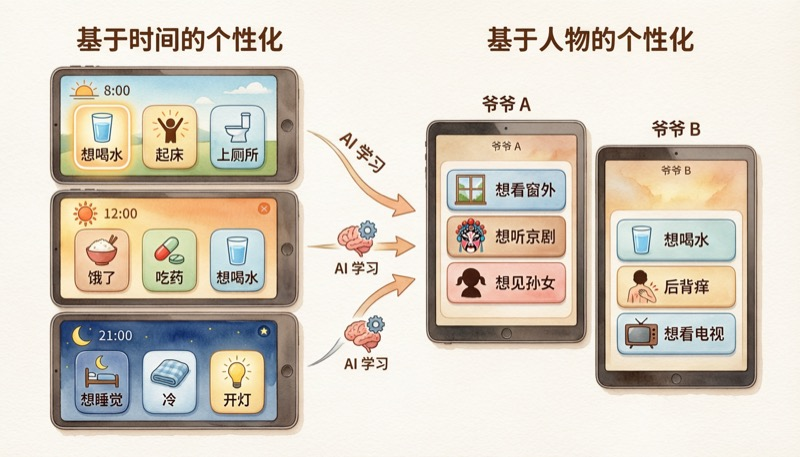

我爷爷因病卧床，意识非常清楚，但语言功能严重受损，说不出话来。每天家人都在猜——"渴了吗？""疼吗？""想上厕所？"猜了五六轮还没猜对，他从急切变成无奈，我们也感到一阵无力。

这不是我一个人的经历。中国现有脑卒中患者近1500万，每年新发约330万，其中约1/3会出现失语或语言障碍。加上渐冻症近10万患者、帕金森超300万患者中晚期的构音障碍人群，"意识清醒但说不出来"的老人有数百万，背后的照护家属更是千万级。
产品使用的典型场景：老人躺在床上或轮椅上，打开平板上的App，看到AI根据当前时间和个人习惯推荐的3个大按钮（图标+文字），点一下就完成表达。家属手机端实时收到消息通知。如果想说更复杂的内容，进入接龙模式，逐步选词拼出完整句子。
当前老人与家人沟通完全靠"猜"，效率极低，双方都很痛苦。市面上有辅助沟通工具（AAC设备），但本质是一棵分类词树，让老人在多级菜单里找词——这对高龄卧床老人来说太复杂了，根本用不了。
核心需求：让说不出话的老人用最低的交互成本表达自己的想法。不是让老人学会使用复杂工具，而是让AI学会理解这个老人。

| 快捷模式 | 接龙模式 | |
|---|---|---|
| 交互次数 | 1次点击 | 3-5次点击 |
| 覆盖场景 | 80%高频日常需求 | 长尾复杂表达 |
| 技术类比 | 推荐系统热门榜单 | 个性化探索推荐 |
推荐算法驱动个性化排序 —— 与现有AAC工具的本质区别。传统工具给所有老人同一套菜单，我们的产品每个人看到的选项不同，而且越用越懂。每一步选择建模为推荐排序问题：已选词序列是上下文，下一个候选词是待推荐项，家属的确认或纠正是反馈信号。我们团队本身做推荐算法，架构高度一致。

为什么必须用AI？每个老人的表达习惯都不同。同一个皱眉，对A意味着头疼，对B意味着想见某个人。静态选项排列无法适应个体差异，只有AI能从历史数据中学到这个老人独有的表达模式。
Demo重点展示推荐算法的个性化效果——不同用户、不同时间看到完全不同的选项排列，体现"越用越懂"的核心差异化。